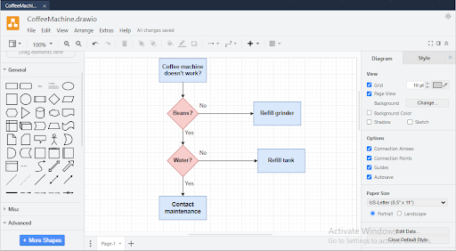
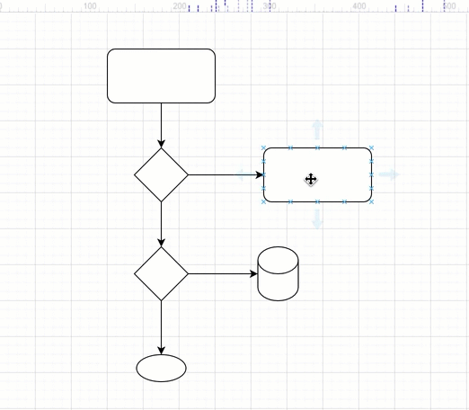
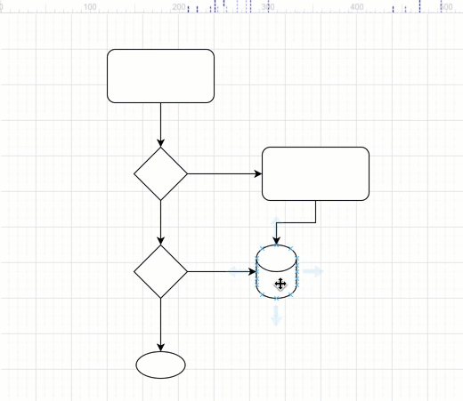
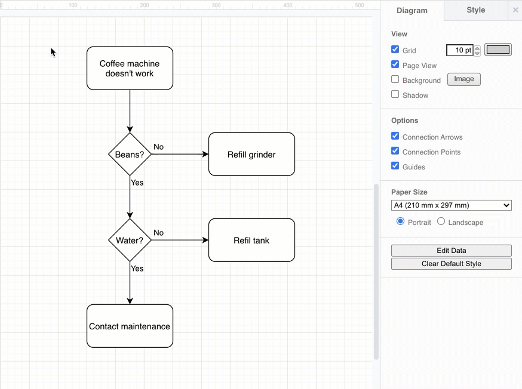

Draw.io¶
Draw.io is a free, open-source web-based diagramming application that allows users to create, edit, and collaborate on various types of diagrams and flowcharts. It provides a user-friendly interface with a wide range of shapes, symbols, and tools for creating professional-quality diagrams for diverse purposes.
Draw.io supports a variety of diagram types, including flowcharts, network diagrams, UML diagrams, entity-relationship diagrams (ERDs), and more. With its intuitive drag-and-drop interface, users can easily create and customize diagrams without the need for advanced technical skills.

Warning
Pair Programming should not be used for Draw.io assignments.
Creating and editing a new draw.io file¶
If you want to create draw.io diagrams in your content, start by creating either a new project or assignment in your course. You can use any stack.
Once inside a project, to create a new draw.io file, simply create a new file with the extension .drawio. A new draw.io window will appear and you can start creating and editing your diagram.
A new file is created from either the File menu or by right-clicking on the project name line in the file tree.
To edit an existing .drawio file, simply click on the file name to open the draw.io editor.
Add shapes to the drawing window¶
Use one of the following methods to add a shape to the drawing window:
Click on a shape (rectangle, circle, etc.) in the General shape library to add it the drawing window.
Double-click on an empty area on the drawing window and select a shape.
Drag a shape from the General shape library to a specific position on the drawing window.
Move, resize, rotate, and delete shapes¶
Move - Select and drag a shape that is on the drawing window to another position.
Resize - Select a shape. Drag any of the round ‘grab’ handles to make the shape smaller or larger.
Rotate - Select a shape. Drag the rotate grab handle (the round arrow) at the top right corner of the shape to rotate the shape around its center point.
Delete - Select a shape, then press Backspace or Delete, or click on the Delete tool in the toolbar.
Connect shapes¶
Connectors are lines that connect your shapes together and may or may not have arrows at one or both ends. There are two types of connectors.
Floating connectors - These move around the perimeter of your shape as you move it around the drawing window, or change the route that the connector takes. To draw a floating connector follow below steps:
Hover over the source shape until you see the light direction arrows appear.
Move your mouse cursor over the direction arrow you want to draw the connector from, then drag the connector out from the arrow towards the target shape.
Hover over the target shape and release when the outline of the shape is blue.

When you move the shape to a new position, the connector ends will automatically move around the shape to ensure the shortest distance.
Fixed connectors - These stay attached to a fixed point on your shape, even when you move the shape around the drawing window. To draw a fixed connector follow below steps:
Hover over the source shape until you see the little crosses, connection points, around the shape perimeter.
Drag a connector from the connection point on the source shape towards the target shape.
Hover over the target shape until you see the connection points, then hover over one of the connection points until it is highlighted in green, and release to attach the connector.

Now when you drag the shape around on the drawing window, the connector will remain attached to exactly those connection points.
Add labels¶
Short labels on shapes make it easier to understand a diagram quickly.
Double click on a shape. Start typing to replace the label with your own text. Alternatively, single click on a shape and start typing to add or edit the label.
Press Enter to save the label text.
Style your flow chart¶
Once you have finished adding all the shapes, connectors and labels, you can style your flow chart.
Select a shape, or hold Shift down and click on multiple shapes and connectors to select many.
Add colours and style your shapes and connectors via the Style tab.
Change the text style of labels on the Text tab

Undo & Redo¶
Undo
Ctrl+Z(PC)Cmd+Z(Mac)Redo
Shift+Ctrl+Z(PC)Shift+Cmd+Z(Mac)